办公室的小哥哥小姐姐们来啦

1.通知的上传下达
2.各部门之间的沟通和联系
3.活动的总体架构的构建和策划
4.日常与社联沟通进行日常活动交表审批，竞赛期间沟通老师及组委会，及时获取最新动态并进行相应安排。
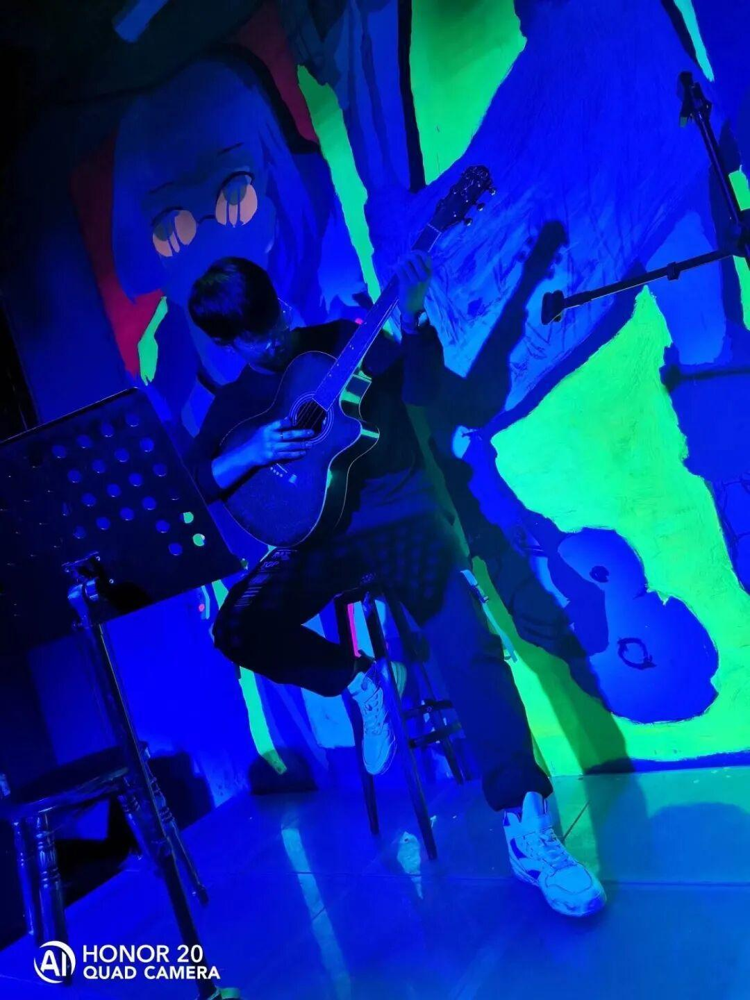
Hello,大家好我是张泽华，是信息院物联网专业的大二学生，时间匆匆，我已经在电协待了一年，收获了喜悦与温情，收获了友情和成长。希望办公室的学弟学妹能在电协闪闪发光。
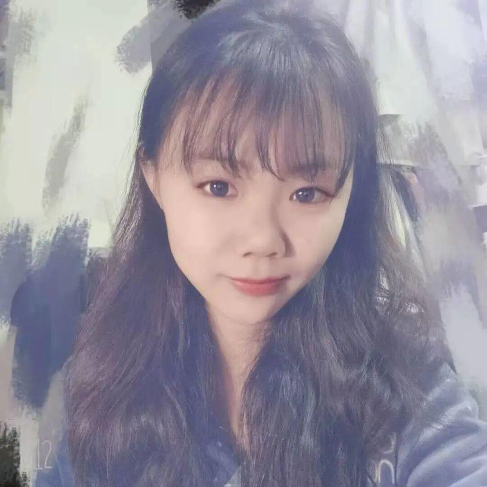
大家好，我是吴宇航。转眼一年过去啦，一路走来大家都成长了许多。愿新加入电协的小宝贝们可以不忘初心，我们共同进步，爱你们!!!
李嘉辰，是一名机械工程学院的学生，希望电协大家庭的成员们“做你所想，爱你所爱”“不忘初心，不负韶华”

Hello大家好，我叫温龙来自装备工程学院，目前是电子技术与应用协会办公室的一名成员。入大学，到电协，心中犹豫不决；转眼间，转瞬间，已是匆匆一年。从当初的热情与激情，变成了现在的责任与信任；从当初的不知天高地厚，变成了现在的成熟稳重；从当初温室中弱不禁风的花朵，变成了现在逆境中茁壮成长的大树。电协教会了我很多，也让我成长了很多。
大一的小萌新

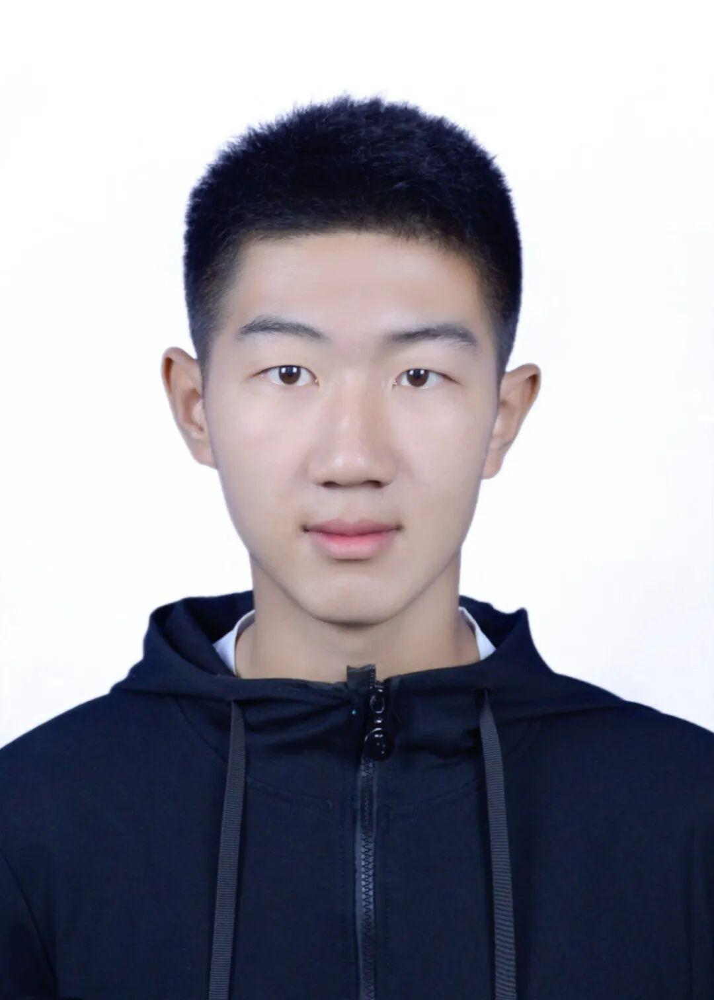
我是电信科二班的田望琳，性格热情开朗，喜欢打篮球，希望在这里能够学到更多技能，完善自己
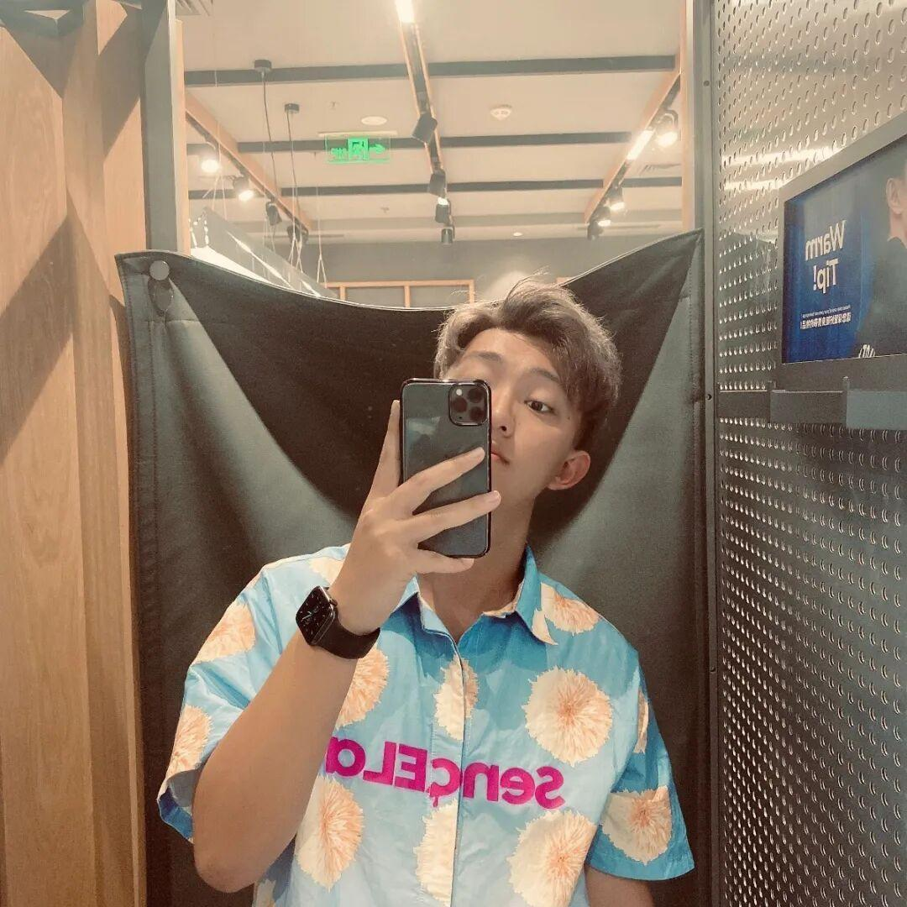
我是来自信息院电子信息科学与技术的温博然，平时喜欢运动，很荣幸能加入办公室的大家庭，希望以后能够学习到更多，结交到更多的朋友。
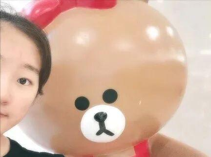
我是黄煜焜，来自电子信息工程，是一个聪明美丽活泼开朗大方可爱的小（zhen）姑（han）娘（zi）。作为一个来自河北的孩子，我生平一大爱好就是——学习！还有就是干饭、睡觉、打游戏之类。很荣幸来到这个大家庭，也希望在未来的日子里我们可以越走越远。
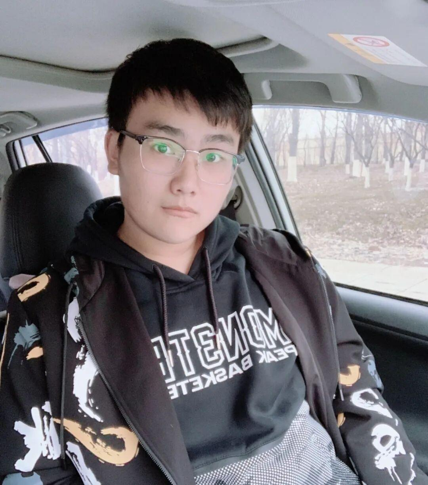
我是电子信息科学与技术1班的李嘉彬，平时喜欢唱歌表演，性格活泼开朗，工作认真仔细善于与人沟通，在办公室的岗位上希望能交更多的朋友，锻炼自己的工作能力，在工作中不断进步
大家好，我是来自信息院的宁枢麟。希望我们都走好自己选择的路，别选好走的路，我一直都很喜欢的一句话就是不忘初心，方得始终，在今后的工作，我也一定会坚持本着认真负责的精神，把每一项事情都踏踏实实做好，期待我们在这里共同的成长与进步！
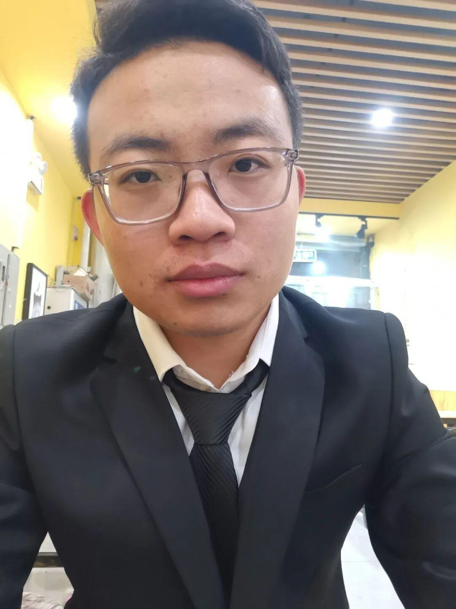
我叫卫宜博，来自山西省运城市。平时喜欢看书，锻炼，足球。来到沈阳理工大学后，十分荣幸可以加入电协这个大家庭，成为其中的一份子，希望能在这里结识更多的朋友，并能和大家一起成长。
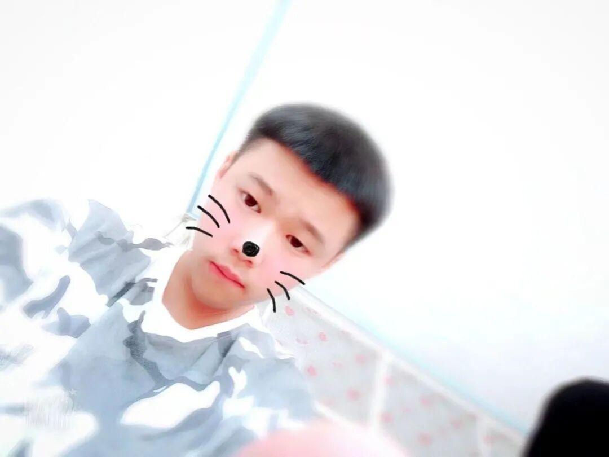
我叫孙赫阳，来自 辽宁铁岭，纯纯东北人，爱好运动，电子产品等，性格外向直率，开朗幽默，在汽车院，车辆工程专业。
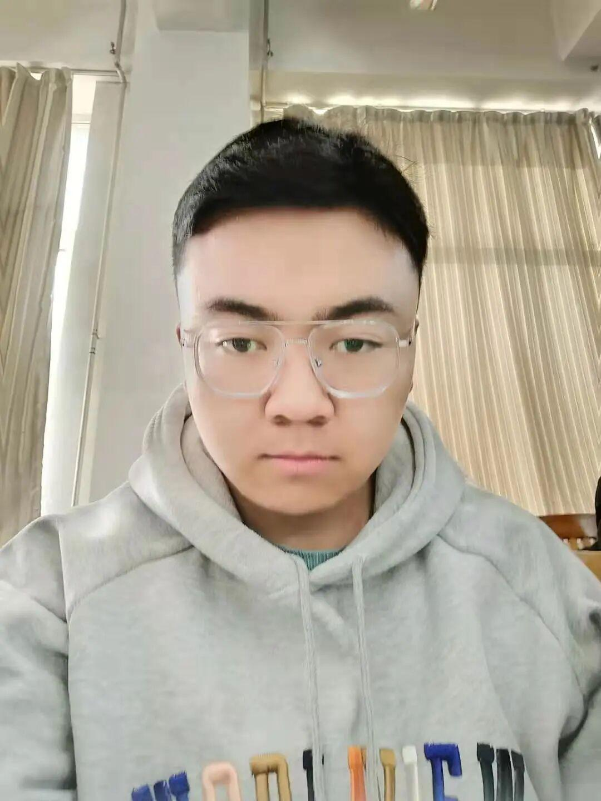
我叫薛生智，来自20级通信工程专业。爱好广泛，尤其喜欢看电影。性格乐观开朗，待人热情真诚，做事认真执着。积极向上，喜欢思考。我相信脚踏实地，好运自然来！
排版|苗力文
图片|办公室
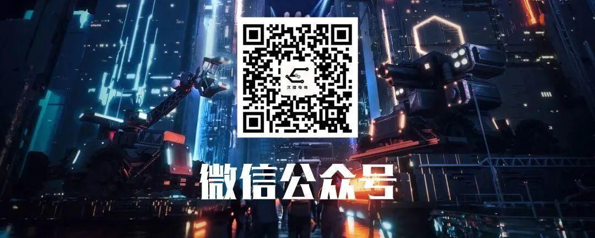
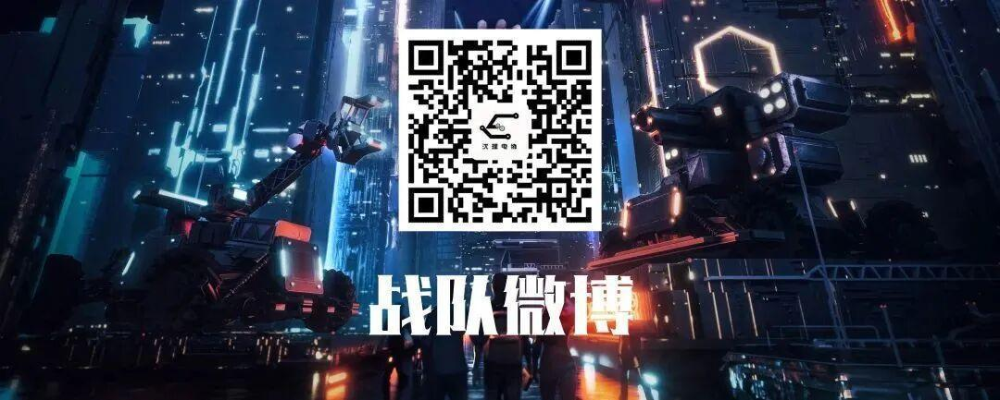